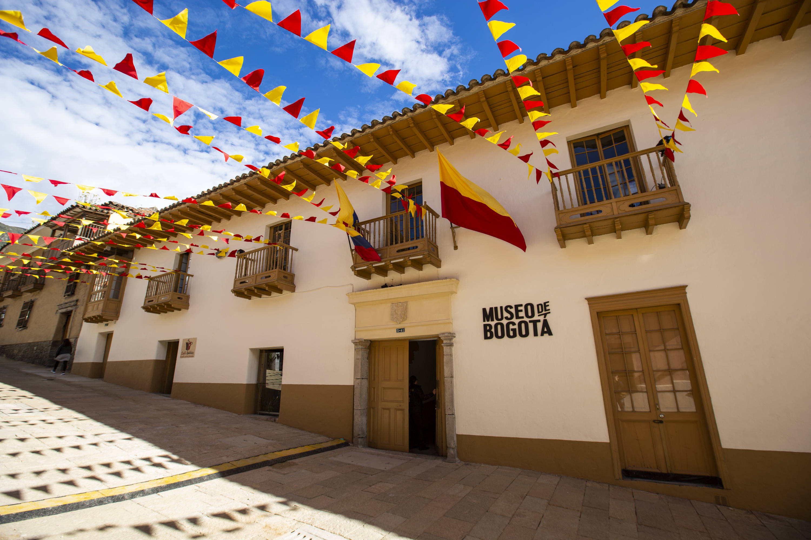
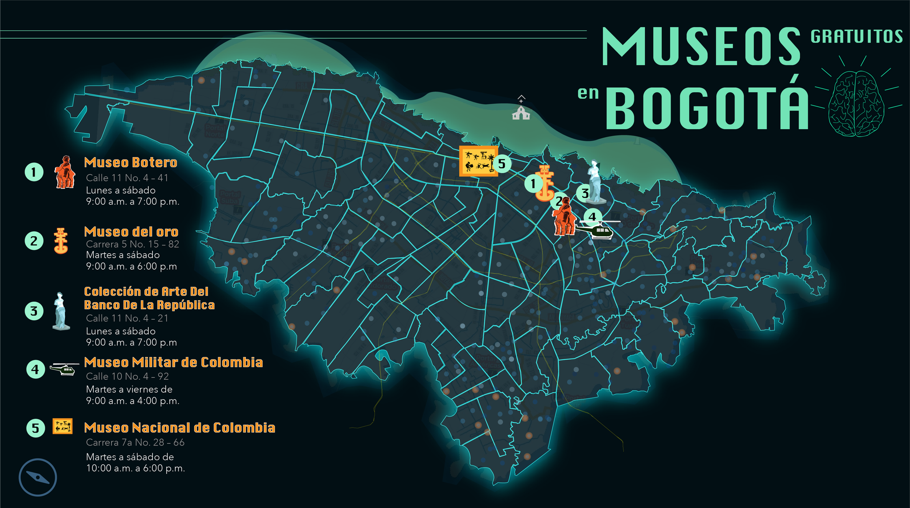
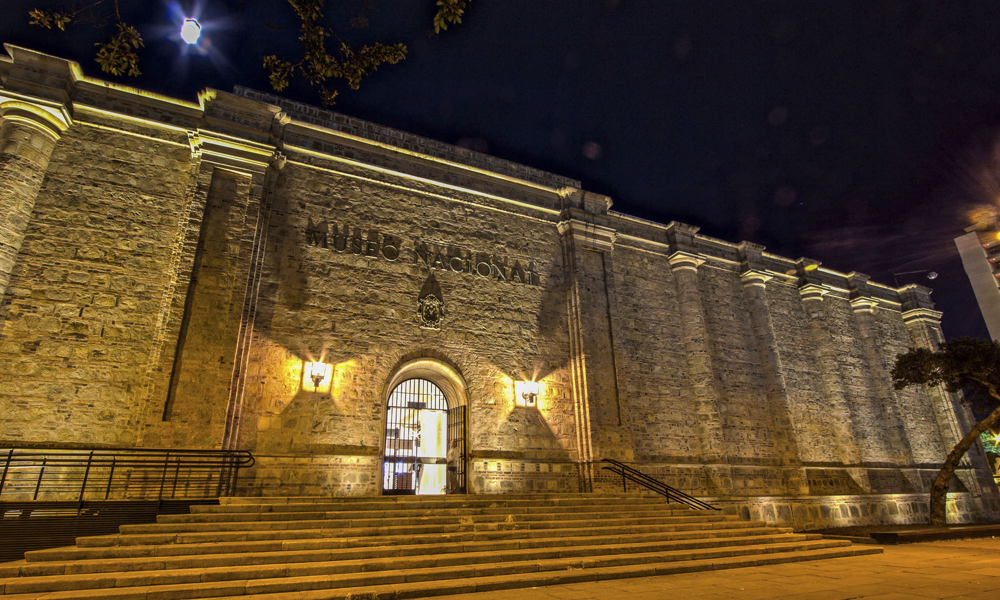
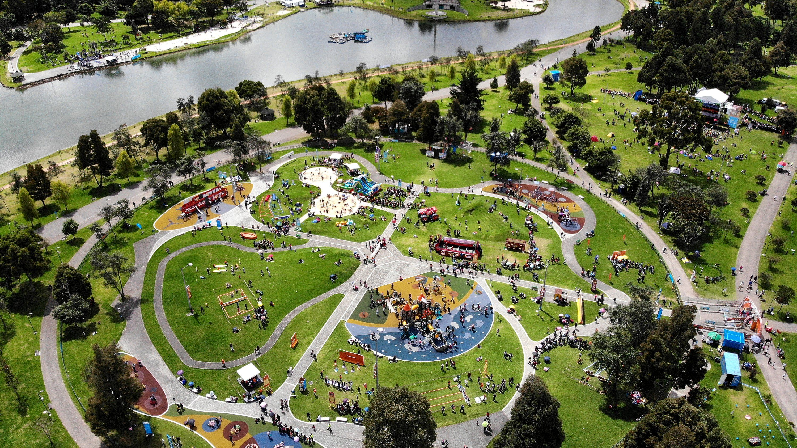
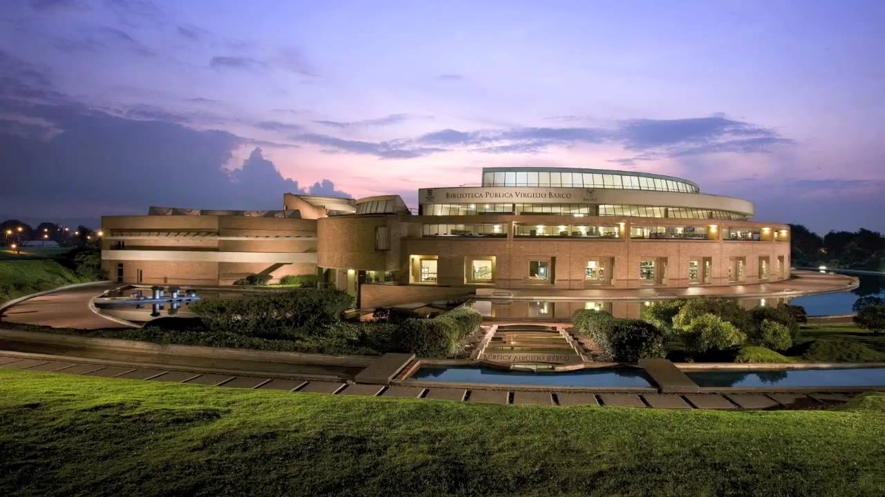
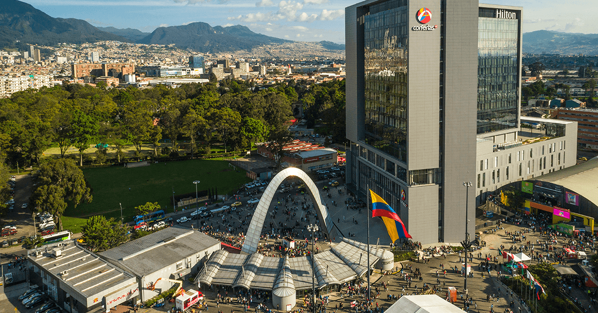
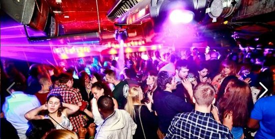

I ♥ Bogotá
Museos



En cuanto a museos tiene más de 50 que puedes visitar y muchas galerías donde se exhiben muestras de distintos tipos de arte de todo el mundo. Los temas abarcan desde lo histórico, con sus próceres de independencia y el proceso para convertirse en lo que es ahora. O se especializan en materiales, como el museo del oro o de la esmeralda.
Parques

Cuando vives en una gran ciudad como Bogotá o la visitas, no puedes olvidar que hay un montón de parques increíbles que puedes visitar cuando tú quieras como el Parque Nacional, Tunal, Simón Bolivar, De los Novios, Florida. Además de eso, dos parques de atracciones espectaculares como Salitre mágico y Mundo aventura.
Bibliotecas

La red de bibliotecas de Bogotá Bibliored, cuenta con más de 20 entidades entre centros culturales y bibliotecas, que ofrecen además de libros, montones de actividades para todas las edades. Esta entidad promueve la apropiación de la lectura, la investigación y la cultura, con el fin de mejorar la calidad de vida de los ciudadanos.
Corferias

Corferias es un recinto ferial, destinado a realizar eventos locales, nacionales e internacionales. Este centro se ha adecuado para ser centro de importantes actividades sociales, empresariales y culturales. En este espacio se realiza la muy conocida Feria del Libro.
Rumbear y comer

Bogotá cuenta con una gran cantidad de lugares para ir a rumbear y a cenar con la familia o los amigos, en sitios como la zona t, la zona g, galerías, la primera de mayo, chapinero, entre otros. Existe una gran diversidad de ambientes; mejor dicho, se le da gusto a todo el mundo.